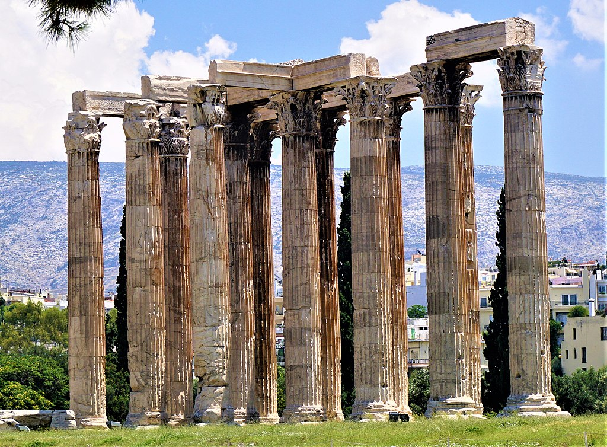
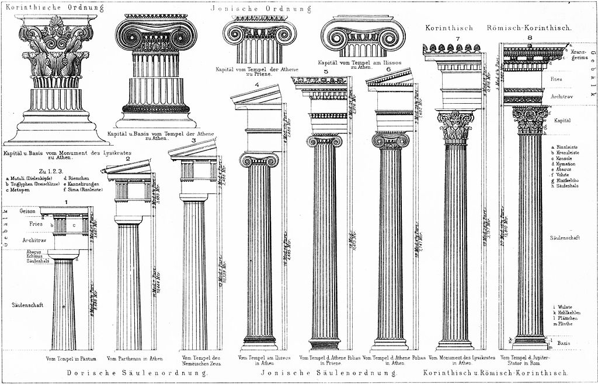

<head>
<meta charset="UTF-8" />
<meta name="keywords" content="drawing, painting" />
<meta name="description" content="drawings by Sunjy" />
<title>Sunjy</title>
<link rel="shortcut icon" type="image/x-icon" href="../../mImages/mCommon/favicon.ico" media="screen" />
<link rel="stylesheet" type="text/css" href="../../mCsses/mCommon/mCssA.css" />
<link rel="stylesheet" type="text/css" href="../../mCsses/mCommon/mCssB.css" />
<link rel="stylesheet" type="text/css" href="../../mCsses/mCommon/mCssC.css" />
<link rel="stylesheet" type="text/css" href="../../mCsses/mCommon/mCssD.css" />
<link rel="stylesheet" type="text/css" href="../../mCsses/mContent/mCssA.css" />
<link rel="stylesheet" type="text/css" href="../../mCsses/mContent/mCssB.css" />
<link rel="stylesheet" type="text/css" href="../../mCsses/mContent/mCssC.css" />
<link rel="stylesheet" type="text/css" href="../../mCsses/mContent/mCssD.css" />
</head>
<script type="text/javascript" src="../../mScripts/mContent/mContentAA.js" /></script>
<script type="text/javascript" src="../../mScripts/mContent/mContentAB.js" /></script>
<script type="text/javascript" src="../../mScripts/mContent/mContentAC.js" /></script>
<script type="text/javascript" src="../../mScripts/mContent/mContentAD.js" /></script>
<script type="text/javascript"></script> 
<script type="text/javascript">
document.write('<div class="mImgAbsolute"></div>');
/*
document.write('<p class="mFontSizeBColor" />From a white paper...</p>');
document.write('<table class="center"><tr><td>');
document.write('');
document.write('</td></tr></table>');
*/
</script>


<script type="text/javascript">
document.write('<p class="mFontSizeBColor" />Temple of Olympian Zeus, Athens</p>');
document.write('<p class="mFontSizeSColor" />Temple of Olympian Zeus, also known as the Olympieion, is a former temple in Athens. The temple was dedicated to “Olympian” Zeus, a name signifying his place as head of the Olympian gods. Construction began in the 6th century BC under Ancient Greek rule. Still, it was not completed until the 2nd century AD in the reign of the Roman Emperor Hadrian, 638 years after the project had begun.<br><br>During the Roman period, the temple had 104 columns and was renowned as the largest temple in Greece and housed one of the largest cult statues in the ancient world. The temple was pillaged during barbarian invasions in the 3rd century AD, just about a century after its completion. It was finally reduced to ruins in the centuries after the fall of the Roman Empire and was quarried for building materials for construction projects elsewhere in the city. Today sixteen of the original gigantic columns have survived, and the site is part of an ongoing archaeological project.<br><br>Corinthian Columns of Temple of Olympian Zeus<br><br>The Corinthian Columns of Temple of Olympian Zeus stand 17 m (55.5 feet) high and 2 m (6.5 ft) in diameter. The Temple was made of high-quality Pentelic marble; it was the first time that Corinthian Columns had been used on the exterior of a major temple. The design was for three rows of eight columns across the front and back of the temple and a double row of twenty on the flanks, for a total of 104 columns.<br><br>Corinthian Order<br><br>The Corinthian style for Columns and Capitals was the last development of the three classical orders of ancient Greek architecture. The other two forms of columns are Doric, which was the earliest, followed by the Ionic order. Corinthian is the most ornate style. This architectural style is characterized by slender fluted columns and elaborate capitals decorated with acanthus leaves and scrolls. The name Corinthian is derived from the ancient Greek city of Corinth.<br><br>Classical Order<br><br>From Ancient Greek civilization, the architectural orders are the styles of classical architecture, each distinguished by its proportions and profiles and most readily recognizable by the type of column employed. The three orders of architecture—the Doric, Ionic, and Corinthian—originated in Greece. To these, the Romans added, in practice if not in name, the Tuscan, which they made simpler than Doric, and the Composite, which was more ornamental than the Corinthian.<br><br>Whereas the orders were primarily structural in Ancient Greek architecture, which made little use of the arch until its late period, in Roman architecture where the arch was often dominant, the orders became increasingly decorative elements except in porticos and similar uses. Columns shrank into half-columns emerging from walls or turned into pilasters. Greek Revival architecture, inspired by increasing knowledge of Greek originals, returned to more authentic models.<br><br></p>');
document.write('<table class="center" /><tr><td>');
document.write('<br>During the Roman period, the temple had 104 columns and was renowned as the largest temple in Greece and housed one of the largest cult statues in the ancient world. The temple was pillaged during barbarian invasions in the 3rd century AD, just about a century after its completion. It was finally reduced to ruins in the centuries after the fall of the Roman Empire and was quarried for building materials for construction projects elsewhere in the city. Today sixteen of the original gigantic columns have survived, and the site is part of an ongoing archaeological project.<br><br>Corinthian Columns of Temple of Olympian Zeus<br><br>The Corinthian Columns of Temple of Olympian Zeus stand 17 m (55.5 feet) high and 2 m (6.5 ft) in diameter. The Temple was made of high-quality Pentelic marble; it was the first time that Corinthian Columns had been used on the exterior of a major temple. The design was for three rows of eight columns across the front and back of the temple and a double row of twenty on the flanks, for a total of 104 columns.<br><br>Corinthian Order<br><br>The Corinthian style for Columns and Capitals was the last development of the three classical orders of ancient Greek architecture. The other two forms of columns are Doric, which was the earliest, followed by the Ionic order. Corinthian is the most ornate style. This architectural style is characterized by slender fluted columns and elaborate capitals decorated with acanthus leaves and scrolls. The name Corinthian is derived from the ancient Greek city of Corinth.<br><br>Classical Order<br><br>From Ancient Greek civilization, the architectural orders are the styles of classical architecture, each distinguished by its proportions and profiles and most readily recognizable by the type of column employed. The three orders of architecture—the Doric, Ionic, and Corinthian—originated in Greece. To these, the Romans added, in practice if not in name, the Tuscan, which they made simpler than Doric, and the Composite, which was more ornamental than the Corinthian.<br><br>Whereas the orders were primarily structural in Ancient Greek architecture, which made little use of the arch until its late period, in Roman architecture where the arch was often dominant, the orders became increasingly decorative elements except in porticos and similar uses. Columns shrank into half-columns emerging from walls or turned into pilasters. Greek Revival architecture, inspired by increasing knowledge of Greek originals, returned to more authentic models.<br><br>" />');
document.write('</td></tr></table>');
document.write('<p class="mFontSizeBColor" />Classical Order</p>');
document.write('<p class="mFontSizeSColor" />The orders of architecture, the Doric, Ionic, and Corinthian</p>');
document.write('<table class="center" /><tr><td>');
document.write('');
document.write('</td></tr></table>');
</script>


